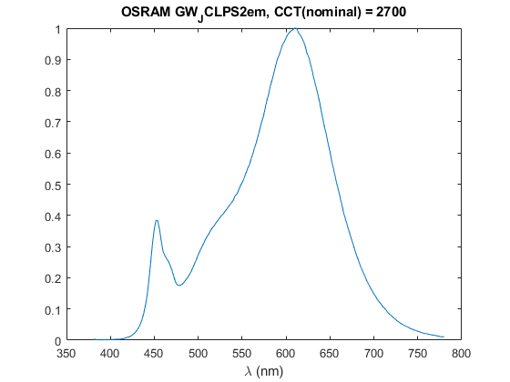

ReadLightToolsSpectrumFile
Navigate to: Home | Alphabetic list | Grouped list | Source code: ReadLightToolsSpectrumFile.m
Reads a spectrum from an ASCII text file in LightTools® spectrum format with comment line handling.
Contents
Syntax
rv = ReadLightToolsSpectrumFile(fn)
Input Arguments
- fn: character string. Filename from where to read.
Output Arguments
- rv: A valid spectrum (struct with fields lam and val).
Algorithm
Reads the lines from the file, assembling the wavelength and value arrays. The 'dataname' entry in the file will make its way into 'dataname' and 'name' fields of the returned spectrum. When the 'discrete' flag is present in the file, the spectrum is approximated as narrow peaks, with 0.001 times the minimum wavelength interval (there are no line spectra in this library). When the 'photometric' flag is set in the file, the returned spectrum is still radiometric, by dividing each value by its corresponding V(lambda) value.
See also
ReadASCIITableSpectrumFile, ReadASCIITableSpectrumFile, SpectrumSanityCheck
Usage Example
function ExampleReadLightToolsSpectrumFile() fn = 'LED_2666K.sre'; spec = ReadLightToolsSpectrumFile(fn); spec figure(); plot(spec.lam, spec.val); xlabel('\lambda (nm)'); title(spec.name); end
publish with publishWithStandardExample('filename.m') in PublishDocumentation.m
spec =
struct with fields:
lam: [201×1 double]
val: [201×1 double]
dataname: 'OSRAM GW_JCLPS2em, CCT(nominal) = 2700'
name: 'OSRAM GW_JCLPS2em, CCT(nominal) = 2700'
